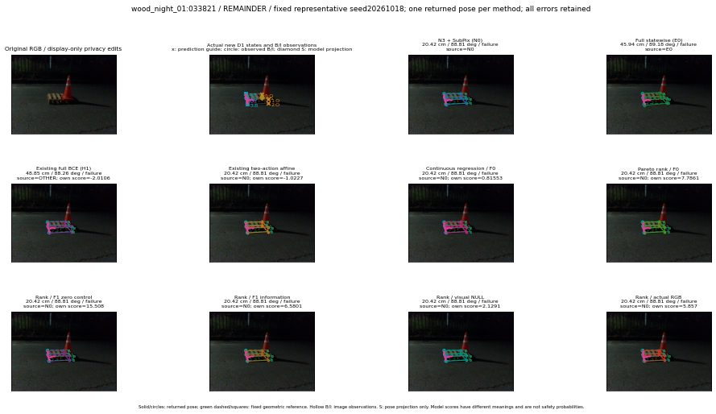

실선은 반환 자세, 초록 점선은 고정 기하 참조입니다. S는 영상 관측이 아닙니다. 점수는 모델별 의미가 다르며 보정된 안전 확률이 아닙니다. 개인정보 처리는 표시 사본에만 적용했습니다.
| 방법·seed | 위치 / 회전 / 공동성공 | 실제 출처 | 선택 후보 | 각 모델 자체 점수 |
|---|---|---|---|---|
| N0 | 20.42 cm / 88.81 deg / failure | N0 | N/A | N/A |
| E0 | 45.94 cm / 89.18 deg / failure | E0 | N/A | N/A |
| E0_REGENERATED | 45.94 cm / 89.18 deg / failure | E0 | E0_REGENERATED | N/A |
| POSEFIX_SUBPIX_PF_ANCHOR | 21.35 cm / 88.67 deg / failure | OTHER | N/A | N/A |
| POSEFIX_SUBPIX_YOLO_ANCHOR | 21.35 cm / 88.67 deg / failure | OTHER | N/A | N/A |
| D1_H1_MLP_s20261018 | 48.85 cm / 88.26 deg / failure | OTHER | G10/ORIGINAL_WD/selected | -2.0105841159820557 |
| D1_H1_MLP_s20261019 | 45.94 cm / 89.18 deg / failure | E0 | E0_REGENERATED | -2.345407247543335 |
| D1_H1_MLP_s20261020 | 48.85 cm / 88.26 deg / failure | OTHER | G10/ORIGINAL_WD/selected | -2.06723690032959 |
| D1_H1_PAIR_MLP_s20261018 | 20.42 cm / 88.81 deg / failure | N0 | N0 | -1.7816493511199951 |
| D1_H1_PAIR_MLP_s20261019 | 20.42 cm / 88.81 deg / failure | N0 | N0 | -1.7165590524673462 |
| D1_H1_PAIR_MLP_s20261020 | 20.42 cm / 88.81 deg / failure | N0 | N0 | -1.5723910331726074 |
| D1_H1_PAIR_ROLE_AFFINE_s20261018 | 20.42 cm / 88.81 deg / failure | N0 | N0 | -1.022697925567627 |
| D1_H1_PAIR_ROLE_AFFINE_s20261019 | 20.42 cm / 88.81 deg / failure | N0 | N0 | -0.9709158539772034 |
| D1_H1_PAIR_ROLE_AFFINE_s20261020 | 20.42 cm / 88.81 deg / failure | N0 | N0 | -0.8589404225349426 |
| R_CONT_F0_s20261018 | 20.42 cm / 88.81 deg / failure | N0 | N0 | 0.8155305981636047 |
| R_CONT_F0_s20261019 | 20.42 cm / 88.81 deg / failure | N0 | N0 | 0.9518305063247681 |
| R_CONT_F0_s20261020 | 20.42 cm / 88.81 deg / failure | N0 | N0 | 0.9344242215156555 |
| R_ORDER_F0_s20261018 | 20.42 cm / 88.81 deg / failure | N0 | N0 | 7.786065578460693 |
| R_ORDER_F0_s20261019 | 20.42 cm / 88.81 deg / failure | N0 | N0 | 5.232336521148682 |
| R_ORDER_F0_s20261020 | 20.42 cm / 88.81 deg / failure | N0 | N0 | -8.46892261505127 |
| R_ORDER_F1_ZERO_s20261018 | 20.42 cm / 88.81 deg / failure | N0 | N0 | 15.507586479187012 |
| R_ORDER_F1_ZERO_s20261019 | 20.42 cm / 88.81 deg / failure | N0 | N0 | 4.4416961669921875 |
| R_ORDER_F1_ZERO_s20261020 | 20.42 cm / 88.81 deg / failure | N0 | N0 | 8.114274024963379 |
| R_ORDER_F1_s20261018 | 20.42 cm / 88.81 deg / failure | N0 | N0 | 6.580117225646973 |
| R_ORDER_F1_s20261019 | 20.42 cm / 88.81 deg / failure | N0 | N0 | 4.803410053253174 |
| R_ORDER_F1_s20261020 | 20.42 cm / 88.81 deg / failure | N0 | N0 | 4.678670406341553 |
| V_ORDER_NULL_s20261018 | 20.42 cm / 88.81 deg / failure | N0 | N0 | 2.1290690898895264 |
| V_ORDER_NULL_s20261019 | 20.42 cm / 88.81 deg / failure | N0 | N0 | 0.33094465732574463 |
| V_ORDER_NULL_s20261020 | 20.42 cm / 88.81 deg / failure | N0 | N0 | 7.291851997375488 |
| V_ORDER_RGB_s20261018 | 20.42 cm / 88.81 deg / failure | N0 | N0 | 5.856999397277832 |
| V_ORDER_RGB_s20261019 | 20.42 cm / 88.81 deg / failure | N0 | N0 | -0.34531068801879883 |
| V_ORDER_RGB_s20261020 | 20.42 cm / 88.81 deg / failure | N0 | N0 | -6.510622501373291 |